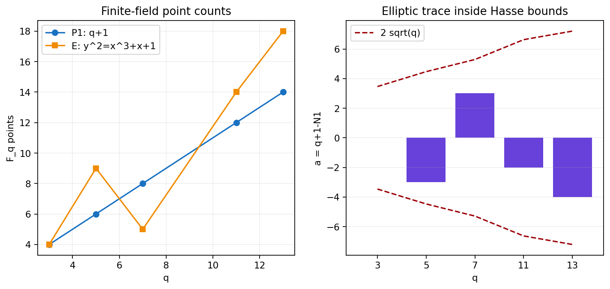
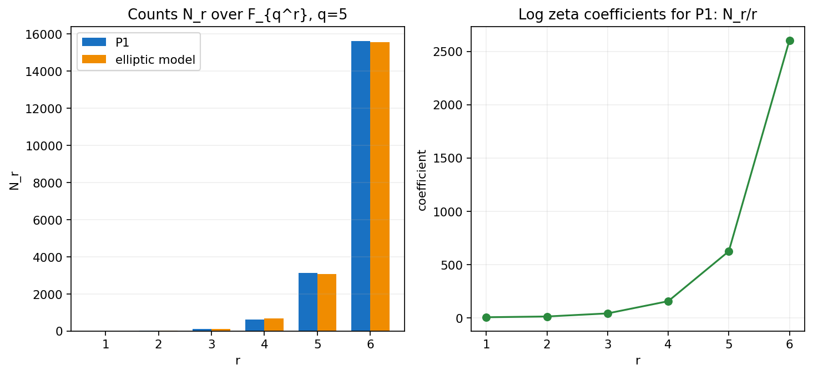
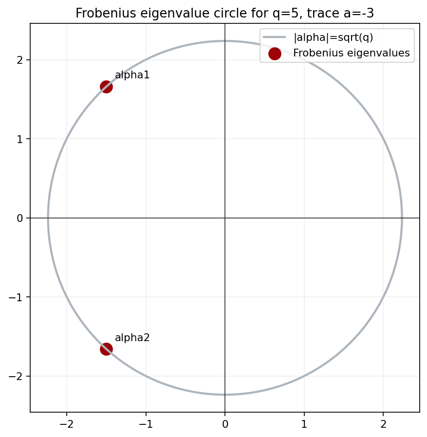

Finite-field point counts are packed into a zeta function, re-read as Frobenius fixed points, and then explained by traces and determinants on \( \ell \)-adic cohomology.

The exponential makes disjoint unions and closed-point products behave like Euler products, while still preserving every \(N_r\).

A point is fixed by \(F^r\) exactly when its coordinates are rational over \(\mathbb F_{q^r}\). The count has become a fixed-point problem.
For connected smooth projective \(X\), \(P_0(t)=1-t\) and \(P_{2n}(t)=1-q^n t\).
For \(\mathbb P^1\), \(n=1\) and \(E=2\), giving \(Z(1/(qt))=qt^2Z(t)\).
Each cohomological degree has its own radius. Degree \(1\) gives \(\sqrt q\); degree \(2\) gives \(q\); degree \(i\) gives \(q^{i/2}\).

frobenius-root-hasse-lab.html plots Frobenius eigenvalues, equivalently reciprocal roots of \(1-at+qt^2\), as \(a\) varies through the Hasse interval.